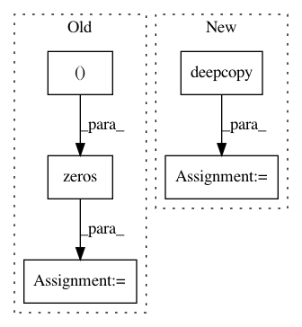

a916546ad317f1e56d7f6aee56340e43291bbdd2,secuml/core/classif/monitoring/prediction/__init__.py,PredictionsMonitoring,add_fold,#PredictionsMonitoring#Any#,38
Before Change
if self.proba_barplot is not None:
self.proba_barplot.add_fold(predictions)
columns = ["predicted_proba", "predictions", "ground_truth", "scores"]
fold_predictions = pd.DataFrame(np.zeros((predictions.num_instances(),
len(columns))),
index=predictions.ids.ids,
columns=columns)
fold_predictions["predicted_proba"] = predictions.probas
fold_predictions["predictions"] = predictions.values
fold_predictions["ground_truth"] = predictions.ground_truth
fold_predictions["scores"] = predictions.scores
if self.predictions is None:
self.predictions = fold_predictions
else:
self.predictions = pd.concat([self.predictions, fold_predictions])
def final_computations(self):
sort_data_frame(self.predictions, "predicted_proba", True, True)
After Change
ids = Ids(deepcopy(predictions.ids.ids),
deepcopy(predictions.ids.idents),
deepcopy(predictions.ids.timestamps))
self.predictions = Predictions(deepcopy(predictions.values), ids,
predictions.multiclass,
deepcopy(predictions.all_probas),
deepcopy(predictions.probas),
deepcopy(predictions.scores),
deepcopy(predictions.ground_truth))
else:
self.predictions.union(predictions)
if self.proba_barplot is not None:
self.proba_barplot.add_fold(predictions)
In pattern: SUPERPATTERN
Frequency: 3
Non-data size: 5
Instances
Project Name: ANSSI-FR/SecuML
Commit Name: a916546ad317f1e56d7f6aee56340e43291bbdd2
Time: 2019-04-19
Author: anael.beaugnon@ssi.gouv.fr
File Name: secuml/core/classif/monitoring/prediction/__init__.py
Class Name: PredictionsMonitoring
Method Name: add_fold
Project Name: brightmart/text_classification
Commit Name: ff6750abca86d981568718f9e71d243deef19394
Time: 2017-06-19
Author: brightmart@hotmail.com
File Name: a1_seq2seq_attention_model.py
Class Name:
Method Name: test
Project Name: kengz/SLM-Lab
Commit Name: 51975a8639d0b83544ec2f932567656b25bfc965
Time: 2018-09-02
Author: lgraesser@users.noreply.github.com
File Name: slm_lab/agent/algorithm/math_util.py
Class Name:
Method Name: calc_nstep_returns